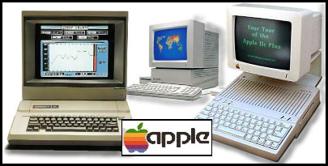
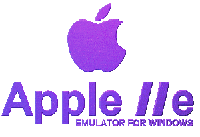

诞生于上个世纪七十年代的 APPLE ][ 电脑，一度风靡全球。整整 18 年，APPLE ][ 几乎是“电脑”这个词的唯一内涵。我的启蒙电脑，一个没落的传奇——模拟器、游戏与工具镜像都在这里。

APPLE ][，当时我们叫“苹果机”，是我的启蒙电脑，我甚至一度以为，这就是电脑的终极形态。事实上，以我的学识和见识，我至今不明白，8086的优势在哪里。虽然，APPLE ][已经成为一个没落的传奇，但是，“苹果机”这三个字，在我心中，永远只属于APPLE ][。

现在，有了APPLE ][模拟器，我们又可以有机会重温苹果带来的快乐了。
AppleWin就是一个适用于Windows操作系统的APPLE ][e模拟器，它能够装载并启动Apple II磁盘镜像文件（DSK或DO档），并运行其中的程序文件。（下载 AppleWin 1.16.1.0）
当然，仅有APPLE ][模拟器是不够的，事实上，今天能够找到的游戏磁盘镜像文档，远比我当年见过的要多得多。如果还有什么不快乐，不过是因为我们今天的欲望已经不比从前了吧。:(